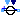
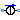
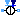
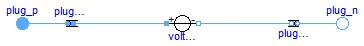
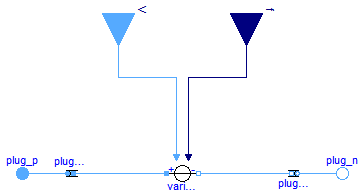
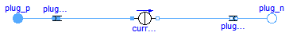
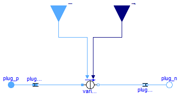

This package hosts sources for quasi stationary multiphase circuits. Quasi stationary theory can be found in the references.
Extends from Modelica.Icons.SourcesPackage (Icon for packages containing sources).
| Name | Description |
|---|---|
| Constant multiphase AC voltage | |
|  VariableVoltageSource | Variable multiphase AC voltage |
|  CurrentSource | Constant multiphase AC current |
|  VariableCurrentSource | Variable multiphase AC current |

This model describes m constant voltage sources, specifying the complex voltages by the RMS voltages and the phase shifts. m single phase VoltageSources are used.
SinglePhase.VoltageSource, VariableVoltageSource, CurrentSource, VariableCurrentSource
Extends from Interfaces.Source (Partial voltage / current source).
| Type | Name | Default | Description |
|---|---|---|---|
| Integer | m | 3 | Number of phases |
| Frequency | f | Frequency of the source [Hz] | |
| Voltage | V[m] | RMS voltage of the source [V] | |
| Angle | phi[m] | {0 - (j - 1)*2*pi/m for j in... | Phase shift of the source [rad] |
| Type | Name | Description |
|---|---|---|
| PositivePlug | plug_p | |
| NegativePlug | plug_n |
model VoltageSource "Constant multiphase AC voltage"
extends Interfaces.Source;
parameter Modelica.SIunits.Frequency f(start=1) "Frequency of the source";
parameter Modelica.SIunits.Voltage V[m](start=fill(1,m))
"RMS voltage of the source";
parameter Modelica.SIunits.Angle phi[m]={0 - (j-1)*2*pi/m for j in 1:m}
"Phase shift of the source";
QuasiStationary.SinglePhase.Sources.VoltageSource voltageSource[
m](
each final f=f,
final V=V,
final phi=phi);
equation
connect(plugToPins_p.pin_p, voltageSource.pin_p);
connect(voltageSource.pin_n, plugToPins_n.pin_n);
end VoltageSource;

This model describes m variable voltage sources, with m complex signal inputs, specifying the complex voltages by the complex RMS voltage components. Additionally, the frequency of the voltage source is defined by a real signal input. m single phase VariableVoltageSources are used.
SinglePhase.VoltageSource, VoltageSource, CurrentSource, VariableCurrentSource
Extends from Interfaces.Source (Partial voltage / current source).
| Type | Name | Default | Description |
|---|---|---|---|
| Integer | m | 3 | Number of phases |
| Type | Name | Description |
|---|---|---|
| PositivePlug | plug_p | |
| NegativePlug | plug_n | |
| input RealInput | f | |
| input ComplexInput | V[m] |
model VariableVoltageSource "Variable multiphase AC voltage" extends Interfaces.Source;QuasiStationary.SinglePhase.Sources.VariableVoltageSource variableVoltageSource[m]; Modelica.Blocks.Interfaces.RealInput f; Modelica.ComplexBlocks.Interfaces.ComplexInput V[m]; equation for j in 1:m loopconnect(f, variableVoltageSource[j].f); end for;connect(plugToPins_p.pin_p, variableVoltageSource.pin_p); connect(variableVoltageSource.pin_n, plugToPins_n.pin_n); connect(V, variableVoltageSource.V); end VariableVoltageSource;

This model describes m constant current sources, specifying the complex currents by the RMS currents and the phase shifts. m single phase CurrentSources are used.
SinglePhase.CurrentSource, VoltageSource, VariableVoltageSource, VariableCurrentSource
Extends from Interfaces.Source (Partial voltage / current source).
| Type | Name | Default | Description |
|---|---|---|---|
| Integer | m | 3 | Number of phases |
| Frequency | f | Frequency of the source [Hz] | |
| Current | I[m] | RMS current of the source [A] | |
| Angle | phi[m] | {0 - (j - 1)*2*pi/m for j in... | Phase shift of the source [rad] |
| Type | Name | Description |
|---|---|---|
| PositivePlug | plug_p | |
| NegativePlug | plug_n |
model CurrentSource "Constant multiphase AC current"
extends Interfaces.Source;
parameter Modelica.SIunits.Frequency f(start=1) "Frequency of the source";
parameter Modelica.SIunits.Current I[m](start=fill(1,m))
"RMS current of the source";
parameter Modelica.SIunits.Angle phi[m]={0 - (j-1)*2*pi/m for j in 1:m}
"Phase shift of the source";
QuasiStationary.SinglePhase.Sources.CurrentSource currentSource[
m](
each final f=f,
final phi=phi,
final I=I);
equation
connect(plugToPins_p.pin_p,currentSource. pin_p);
connect(currentSource.pin_n, plugToPins_n.pin_n);
end CurrentSource;

This model describes m variable current sources, with m complex signal inputs, specifying the complex current by the complex RMS voltage components. Additionally, the frequency of the current source is defined by a real signal input. m single phase VariableCurrentSources are used.
SinglePhase.VoltageSource, VoltageSource, VariableVoltageSource, CurrentSource.
Extends from Interfaces.Source (Partial voltage / current source).
| Type | Name | Default | Description |
|---|---|---|---|
| Integer | m | 3 | Number of phases |
| Type | Name | Description |
|---|---|---|
| PositivePlug | plug_p | |
| NegativePlug | plug_n | |
| input RealInput | f | |
| input ComplexInput | I[m] |
model VariableCurrentSource "Variable multiphase AC current" extends Interfaces.Source;QuasiStationary.SinglePhase.Sources.VariableCurrentSource variableCurrentSource[m]; Modelica.Blocks.Interfaces.RealInput f; Modelica.ComplexBlocks.Interfaces.ComplexInput I[m]; equation for j in 1:m loopconnect(f, variableCurrentSource[j].f); end for;connect(plugToPins_p.pin_p, variableCurrentSource.pin_p); connect(variableCurrentSource.pin_n, plugToPins_n.pin_n); connect(I, variableCurrentSource.I); end VariableCurrentSource;